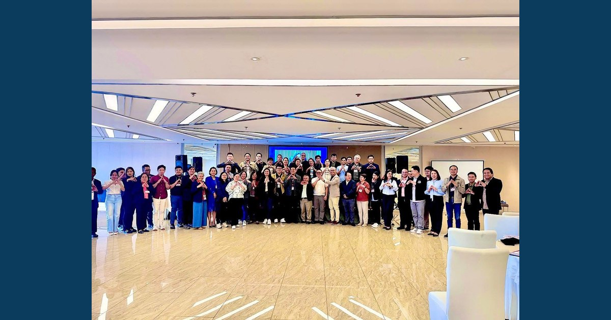

MCNP and ISAP Join CHED Consultative Workshop to Shape the Future of Innovation in Philippine Higher Education

MCNP and ISAP joined CHED’s Luzon Cluster Consultative Workshop in Quezon City, contributing to discussions on the future of research, development, and innovation in Philippine higher education.
Read full article